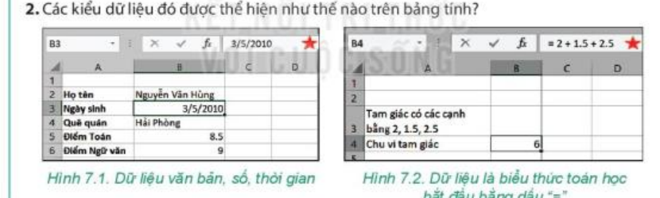
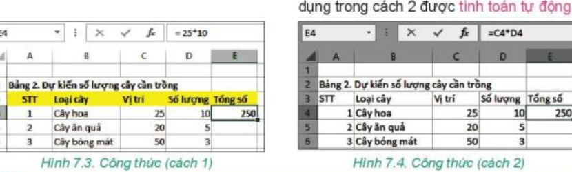
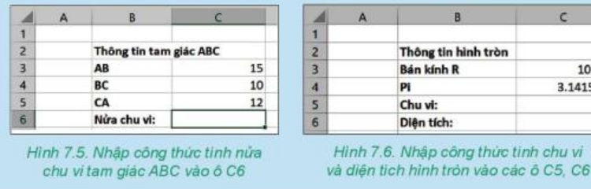

KẾ HOẠCH BÀI DẠY
MÔN: TIN HỌC 7 – BỘ SÁCH KẾT NỐI TRI THỨC VỚI CUỘC SỐNG
CHỦ ĐỀ 4: ỨNG DỤNG TIN HỌC
BÀI 7: TÍNH TOÁN TỰ ĐỘNG TRÊN BẢNG TÍNH (Tiết 1/2)
Nội dung: Kiểu dữ liệu trên bảng tính; công thức; sao chép ô tính chứa công thức
Thời gian thực hiện: 1 tiết (45 phút) – SGK trang 34–37
I. MỤC TIÊU
1) Kiến thức
Nhận biết được các kiểu dữ liệu cơ bản trên ô tính: văn bản, số, ngày tháng, thời gian và dữ liệu là công thức (luôn bắt đầu bằng dấu "=").
Biết và sử dụng đúng kí hiệu các phép toán trong phần mềm bảng tính: cộng (+), trừ (–), nhân (*), chia (/), luỹ thừa (^) và cặp dấu ngoặc tròn ().
Biết nhập công thức có chứa địa chỉ ô; giải thích được việc dùng địa chỉ ô trong công thức giúp bảng tính tự động tính toán lại khi dữ liệu thay đổi.
Biết sao chép ô tính chứa công thức (Ctrl+C, Ctrl+V); giải thích được các địa chỉ trong công thức được điều chỉnh để giữ nguyên vị trí tương đối giữa ô chứa công thức và các ô có địa chỉ trong công thức.
2) Năng lực
a) Năng lực chung
Tự chủ và tự học: chủ động đọc SGK trang 34–37, thực hành nhập công thức và quan sát sự thay đổi kết quả trên máy tính.
Giao tiếp và hợp tác: thảo luận cặp đôi (Think – Pair – Share), nhóm 6 HS; biết lắng nghe, nhận xét, hỗ trợ bạn.
Giải quyết vấn đề và sáng tạo: so sánh ưu điểm của việc dùng địa chỉ ô so với nhập số trực tiếp; giải thích sự điều chỉnh địa chỉ ô khi sao chép công thức.
b) Năng lực Tin học
NLa (Sử dụng và quản lí phương tiện công nghệ thông tin và truyền thông): nhập đúng công thức và sao chép công thức trong phần mềm bảng tính.
NLd (Ứng dụng công nghệ thông tin và truyền thông trong học và tự học): dùng bảng tính tính toán số liệu của dự án học tập "Trường học xanh".
c) Năng lực số (NLS)
5.2.TC1a – Xác định nhu cầu và giải pháp công nghệ (mức L6–L7): nhận biết khi nào cần lập công thức trong bảng tính thay cho tính tay (tính tổng số cây, kinh phí, chu vi, diện tích).
5.2.TC1b – Chọn công cụ số và giải pháp công nghệ (mức L6–L7): chọn dùng công thức chứa địa chỉ ô và thao tác sao chép công thức để tính nhanh cho nhiều dòng dữ liệu [GV đối chiếu lại CV3456].
d) Năng lực Trí tuệ nhân tạo (AI)
A1 – Tính chủ động của con người (Xác thực kết quả): nêu được hậu quả khi không kiểm tra lại công thức do công cụ AI gợi ý (hoạt động nhỏ ở phần Vận dụng, GV tự soạn).
3) Phẩm chất
Chăm chỉ: tự giác thực hành, kiên trì sửa lỗi cú pháp công thức.
Trung thực: ghi kết quả thực hành đúng với thực tế.
Trách nhiệm: tuân thủ nội quy phòng máy, giữ gìn thiết bị.
II. THIẾT BỊ DẠY HỌC VÀ HỌC LIỆU
1. Giáo viên
Kế hoạch bài dạy, bài trình chiếu; máy tính, máy chiếu hoặc Tivi; phần mềm bảng tính (Microsoft Excel hoặc tương đương).
Phiếu học tập số 1 (Kiểu dữ liệu và phép toán), Phiếu học tập số 2 (Công thức và sao chép công thức) – xem phụ lục cuối bài.
Thẻ trắc nghiệm màu A-B-C-D (hoặc ClassPoint).
2. Học sinh
SGK Tin học 7 (trang 34–37), vở ghi, máy tính thực hành (1–2 HS/máy), thẻ A-B-C-D.
III. TIẾN TRÌNH DẠY HỌC
1. Khởi động (5 phút)
a) Mục tiêu:
Gợi mở nhu cầu dùng công thức để tính toán tự động trong bảng tính cho dự án "Trường học xanh" (SGK trang 34).
b) Nội dung: HS thảo luận cặp đôi (Think – Pair – Share) câu hỏi mở đầu bài (SGK trang 34): có thể nhập dữ liệu là công thức tính toán vào bảng tính được không?
c) Sản phẩm: Ý kiến của HS về các phép toán cần dùng trong dự án; HS nhận ra cần có công cụ tính toán tự động.
d) Tổ chức thực hiện:
| Hoạt động của giáo viên | Hoạt động của học sinh |
|---|---|
Bước 1: Chuyển giao nhiệm vụ
| Bước 1: Chuyển giao nhiệm vụ
|
Bước 2: Thực hiện nhiệm vụ
| Bước 2: Thực hiện nhiệm vụ
|
Bước 3: Báo cáo, thảo luận
| Bước 3: Báo cáo, thảo luận
|
Bước 4: Kết luận, nhận định
| Bước 4: Kết luận, nhận định
|
2. Hoạt động 1: Kiểu dữ liệu trên bảng tính và kí hiệu các phép toán (9 phút)
a) Mục tiêu:
Nhận biết các kiểu dữ liệu: văn bản, số, ngày tháng/thời gian và công thức bắt đầu bằng dấu "=".
Viết đúng kí hiệu các phép toán trong bảng tính (Bảng 7.1) và phát hiện công thức sai cú pháp (NLS 5.2.TC1a).
b) Nội dung: Quan sát Hình 7.1, 7.2 (Hoạt động 1, SGK trang 34); đọc Bảng 7.1 (trang 35); nhóm 6 HS hoàn thành Phiếu học tập số 1; trả lời câu hỏi "công thức nào sai?" (SGK trang 35).
c) Sản phẩm: Phiếu học tập số 1; bảng kí hiệu phép toán; đáp án câu hỏi: công thức sai là B và C.
d) Tổ chức thực hiện:
| Hoạt động của giáo viên | Hoạt động của học sinh |
|---|---|
Bước 1: Chuyển giao nhiệm vụ
 Hình 7.1 và 7.2: Dữ liệu văn bản, số, thời gian và công thức
| Bước 1: Chuyển giao nhiệm vụ
|
Bước 2: Thực hiện nhiệm vụ
| Bước 2: Thực hiện nhiệm vụ
|
Bước 3: Báo cáo, thảo luận
| Bước 3: Báo cáo, thảo luận
|
Bước 4: Kết luận, nhận định
| Bước 4: Kết luận, nhận định
|
3. Hoạt động 2: Công thức trong bảng tính và sao chép ô tính chứa công thức (18 phút)
a) Mục tiêu:
Biết nhập công thức chứa địa chỉ ô; giải thích được bảng tính tự động cập nhật kết quả khi dữ liệu thay đổi (NLS 5.2.TC1a).
Biết các bước sao chép ô tính chứa công thức; giải thích được các địa chỉ được điều chỉnh để giữ nguyên vị trí tương đối (NLS 5.2.TC1b).
b) Nội dung: Nội dung 2.1 (SGK trang 35–36, 9 phút): so sánh 2 cách tính ở Hình 7.3, 7.4; viết công thức theo Hình 7.5, 7.6. Nội dung 2.2 (SGK trang 36–37, 9 phút): Hoạt động 3, Hình 7.7, 7.8, 2 câu hỏi cuối mục 3; thực hiện trên Phiếu học tập số 2.
c) Sản phẩm: Phiếu học tập số 2; kết luận "trong công thức ghi địa chỉ ô để bảng tính tự cập nhật"; công thức Hình 7.5, 7.6; quy trình 4 bước sao chép; đáp án 2 câu hỏi trang 37.
d) Tổ chức thực hiện:
Nội dung 2.1: Công thức trong bảng tính (SGK trang 35–36) – 9 phút
| Hoạt động của giáo viên | Hoạt động của học sinh |
|---|---|
Bước 1: Chuyển giao nhiệm vụ 1

| Bước 1: Chuyển giao nhiệm vụ 1
|
Bước 2: Thực hiện và báo cáo
| Bước 2: Thực hiện và báo cáo
|
Bước 3: Chuyển giao nhiệm vụ 2

| Bước 3: Chuyển giao nhiệm vụ 2
|
Bước 4: Báo cáo, nhận định
| Bước 4: Báo cáo, nhận định
|
Nội dung 2.2: Sao chép ô tính chứa công thức (SGK trang 36–37) – 9 phút
| Hoạt động của giáo viên | Hoạt động của học sinh |
|---|---|
Bước 1: Chuyển giao nhiệm vụ
| Bước 1: Chuyển giao nhiệm vụ
|
Bước 2: Thực hiện nhiệm vụ
| Bước 2: Thực hiện nhiệm vụ
|
Bước 3: Báo cáo, thảo luận
| Bước 3: Báo cáo, thảo luận
|
Bước 4: Kết luận, nhận định
| Bước 4: Kết luận, nhận định
|
4. Luyện tập (8 phút)
a) Mục tiêu:
Củng cố kiến thức trang 34–37 qua trò chơi trắc nghiệm.
b) Nội dung: Trò chơi "Bậc thầy công thức" gồm 4 câu hỏi trắc nghiệm (GV tự soạn bám nội dung SGK trang 34–37, vì các trang này không có phần Luyện tập), trả lời bằng thẻ A-B-C-D hoặc ClassPoint.
c) Sản phẩm: Kết quả trả lời của HS; đáp án: 1-C, 2-B, 3-B, 4-B.
d) Tổ chức thực hiện:
| Hoạt động của giáo viên | Hoạt động của học sinh |
|---|---|
Bước 1: Chuyển giao nhiệm vụ
| Bước 1: Chuyển giao nhiệm vụ
|
Bước 2: Thực hiện nhiệm vụ
| Bước 2: Thực hiện nhiệm vụ
|
Bước 3, 4: Báo cáo, nhận định
| Bước 3, 4: Báo cáo, nhận định
|
5. Vận dụng (5 phút)
a) Mục tiêu:
Vận dụng kiến thức công thức vào tình huống kiểm tra công thức do công cụ AI gợi ý (A1 – Xác thực kết quả).
b) Nội dung: Tình huống (GV tự soạn, bám Hình 7.5, SGK trang 36), HS trao đổi cặp đôi ngay tại lớp.
c) Sản phẩm: Công thức đúng =(C3+C4+C5)/2; nhận xét về việc phải kiểm tra kết quả do AI gợi ý.
d) Tổ chức thực hiện:
| Hoạt động của giáo viên | Hoạt động của học sinh |
|---|---|
Bước 1: Chuyển giao nhiệm vụ
| Bước 1: Chuyển giao nhiệm vụ
|
Bước 2, 3: Thực hiện, báo cáo
| Bước 2, 3: Thực hiện, báo cáo
|
Bước 4: Kết luận, dặn dò
| Bước 4: Kết luận, dặn dò
|
PHỤ LỤC: PHIẾU HỌC TẬP
Phiếu học tập số 1: Kiểu dữ liệu và phép toán (SGK trang 34–35)
| Câu hỏi | Trả lời của học sinh |
|---|---|
| Câu 1. Bảng tính nhận biết được những kiểu dữ liệu nào? | |
| Câu 2. Các kiểu dữ liệu đó thể hiện như thế nào? Muốn nhập công thức phải gõ kí tự nào đầu tiên? | |
| Câu 3. Viết kí hiệu phép nhân, phép chia, phép luỹ thừa trong phần mềm bảng tính. |
Phiếu học tập số 2: Công thức và sao chép công thức (SGK trang 35–37)
| Câu hỏi | Trả lời của học sinh |
|---|---|
| Câu 1. Ô E4 nhập =25*10 hoặc =C4*D4; sửa C4 từ 25 thành 30, kết quả E4 ở mỗi cách thế nào? | |
| Câu 2. Hình 7.5: viết công thức tính Nửa chu vi tại ô C6. | |
| Câu 3. Hình 7.6: viết công thức tính Chu vi tại C5 và Diện tích tại C6. | |
| Câu 4. Sao chép E4 (=C4*D4) xuống E5, E6: công thức ở E5, E6 là gì? | |
| Câu 5. (a) Sao chép từ E4 sang E10 thì công thức ở E10 là gì? (b) G10 có =H10+2*K10, sao chép đến G12 được công thức nào? |